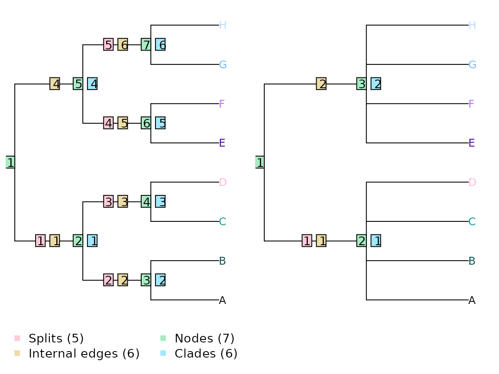
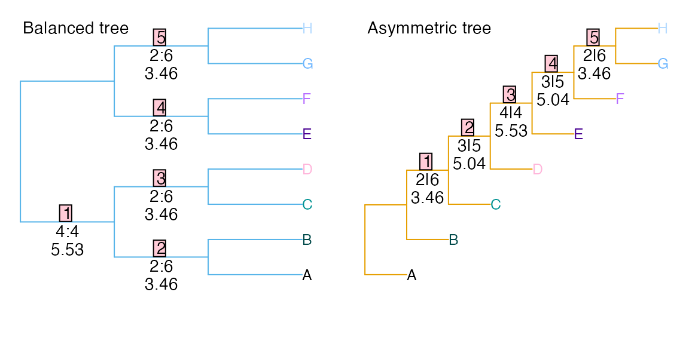
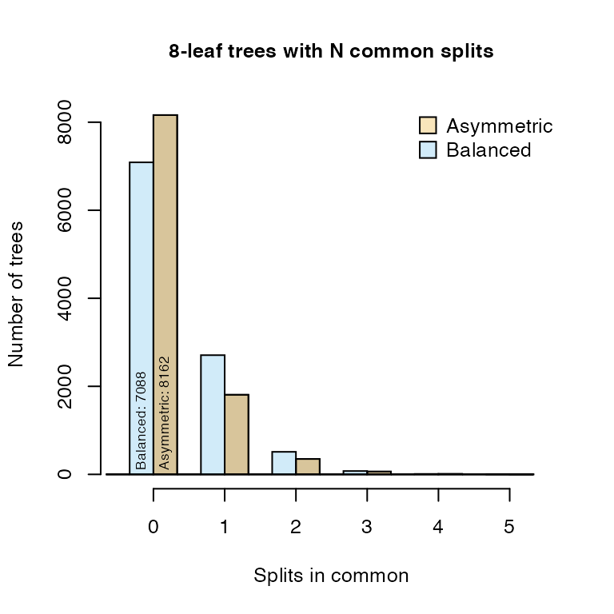
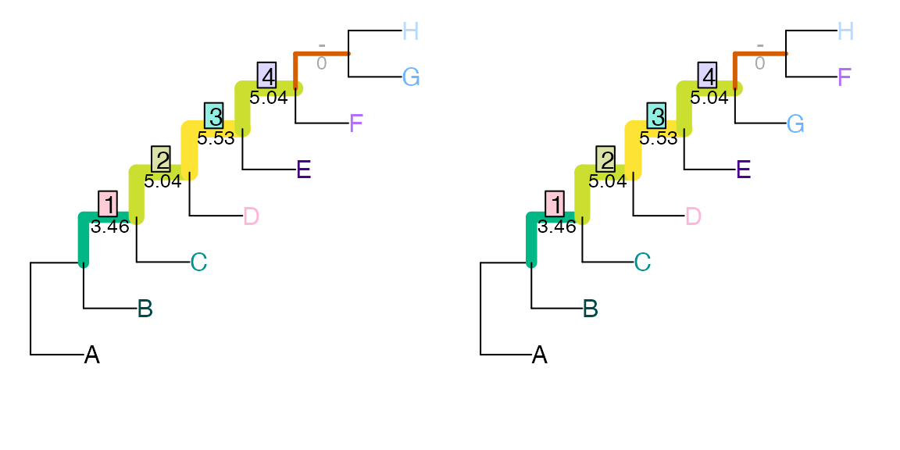
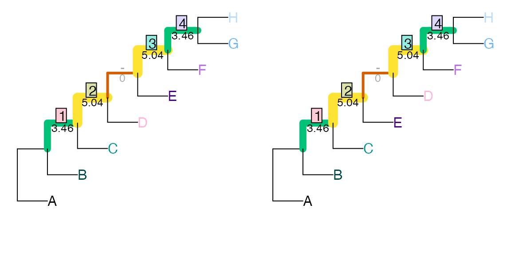
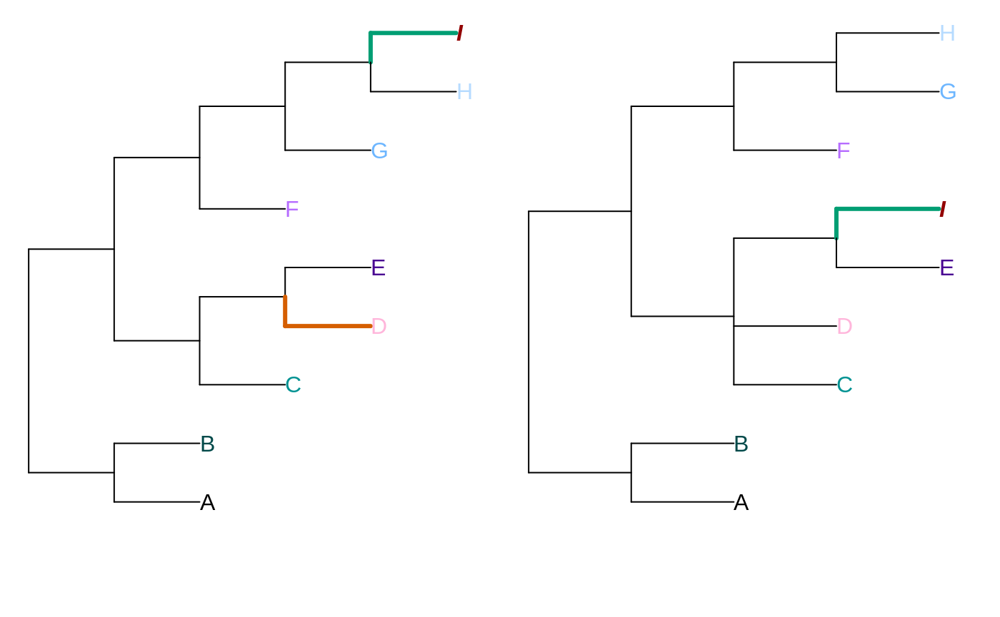
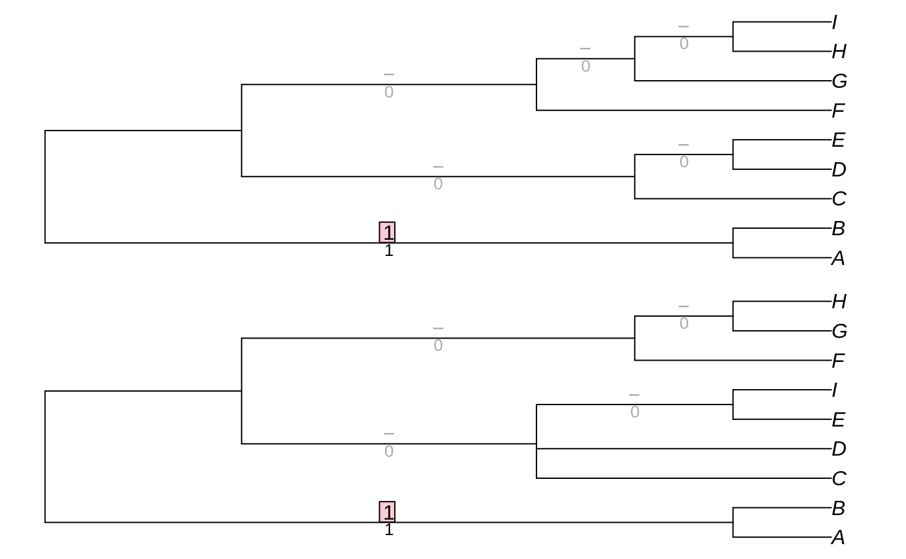
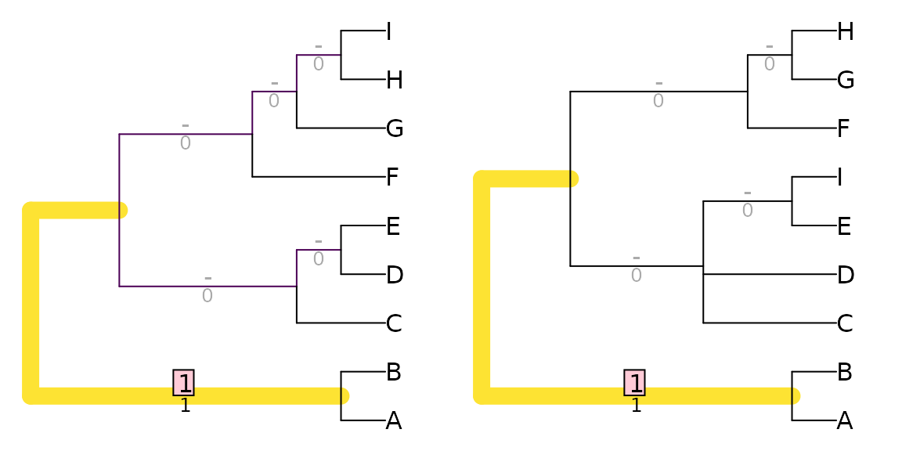
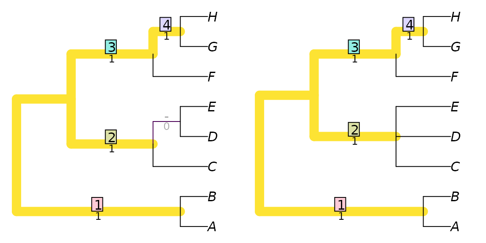
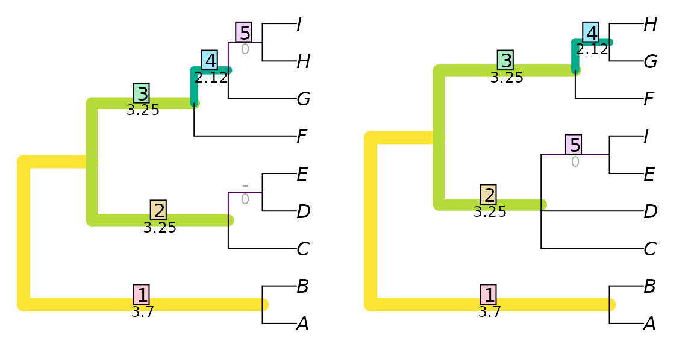

vignettes/Robinson-Foulds.Rmd
Robinson-Foulds.RmdThe Robinson-Foulds distance (Robinson & Foulds, 1981) is a symmetric distance measure that counts the number of partitions that occur in one tree, but not the other.
It is importand to remember that counting partitions is not the same as counting clades, edges or nodes. If a tree is drawn as rooted (even without a root edge), then the number of partitions is one less than the number of edges or clades, and two less than the number of nodes. For example, the trees below have one partition, two edges and three nodes in common.

The simplicity of counting partitions is appealing, but limiting: it assumes that all partitions are equivalent, when they are not.
In the example above, the probability that a tree with two unresolved clades of four taxa will be compatible with the reference tree on the left is one in 35. In contrast, a tree that separates two taxa from six has a one in seven chance of matching the reference tree: the similarity observed is five times more likely to have arisen by chance. In other words, failure to match an even partition is less noteworthy than failure to match an uneven one.
As a consequence, trees whose partitions are less even will, on average, have higher Robinson-Foulds distances with comparison trees.
Consider a balanced and an unbalanced eight-taxon tree:

Each tree divides the eight taxa into five bipartition splits. The information content (Shannon entropy) of a split is a function of the probability that the split will match a random tree, i.e. the proportion of eight-tip tree topologies that contain the split in question. (Information content, in bits, is defined as \(-log _2_(probability)\).) This, in turn, is a function of the evenness of the split:
| Matching trees | p(Match in random tree) | Information content / bits | |
|---|---|---|---|
| Partition size: 2:6 | 945 / 10 395 | 0.0909 | 3.46 |
| Partition size: 3:5 | 315 / 10 395 | 0.0303 | 5.04 |
| Partition size: 4:4 | 225 / 10 395 | 0.0216 | 5.53 |
In the first tree, split 1 is even, dividing four taxa from four others (4:4); splits 2–5 are maximally uneven (2:6). The total information content of these five splits is 19.37, whereas that of the five splits in the second tree, of sizes 2:6, 3:5, 4:4, 3:5 and 2:6, is 22.54. Put another way, a random tree will on average share more partitions with the balanced tree (whose partitions are predominantly uneven and thus likely to be matched) than the asymmetric tree (which contains more even partitions that are less likely to occur in a random tree).
Of the 10 395 eight-tip trees, many more bear at least one partition in common with a balanced tree than with an asymmetric tree:

This differing information content can be accommodated by weighting each partition according to the amount of phylogenetic information it contains. The two tree pairs below both have a Robinson-Foulds distance of two, but the first pair differ with regard to an uneven partition (ABCDEF:GH), so obtain a total difference of 22.54 - (3.46 + 5.04 + 5.53 + 5.04) = 3.46:
tree1 <- ape::read.tree(text='(1, (2, (3, (4, (5, (6, (7, 8)))))));')
tree2 <- ape::read.tree(text='(1, (2, (3, (4, (5, (7, (6, 8)))))));')
tree3 <- ape::read.tree(text='(1, (2, (3, (5, (4, (6, (7, 8)))))));')
VisualizeMatching(RobinsonFouldsInfo, tree1, tree2,
Plot = TreeDistPlot, leaveRoom=FALSE, prune = 12)
whereas the second pair differ in the resolution of a more even partition (ABCD:EFGH) and thus receive a distance score of 5.53:
VisualizeMatching(RobinsonFouldsInfo, tree1, tree3,
Plot = TreeDistPlot, leaveRoom=FALSE, prune = 8)
The Robinson-Foulds distance is readily saturated: the maximum distance can be obtained by moving a single taxon on a tree.
tree1 <- ape::read.tree(text='(1, (2, (3, (4, (5, (6, (7, 8)))))));')
tree2 <- ape::read.tree(text='(8, (1, (2, (3, (4, (5, (6, 7)))))));')
VisualizeMatching(RobinsonFoulds, tree1, tree2,
Plot = TreeDistPlot, leaveRoom=FALSE)
Generalized Robsinson-Foulds distances seek to address this issue. This category of metrics aim to acknowledge semblances between similar-but-not-quite-identical pairs of partitions, which would contribute zero to tree similarity under the standard Robinson-Foulds.
Generalized RF distances work by pairing each partition in one tree with a similar partition in the other (or leaving it unpaired). Each pairing is scored according to the similarity of the paired partitions. The decision of which partition to pair with which is called a matching, and a matching is scored by summing the individual similarity scores of each pair. The tree distance is given by the score of the optimal matching.
Let’s consider two trees that differ in the position of a wildcard terminal, and in the resolution of a clade:
tree1 <- ape::read.tree(text='((A, B), ((C, (D, E)), (F, (G, (H, I)))));')
tree2 <- read.tree(text='((A, B), ((C, D, (E, I)), (F, (G, H))));')
Plot(tree1, tree2, highlight = 'I', prune=list(8, integer(0)))
To emphasize, when the single taxon I is removed, the trees differ only in the resolution of a single node:

However, the Robinson-Foulds distance will see only one partition, AB:CDEFGHI, in common between the two trees:

This results in a distance score of nine, out of a maximum possible (for trees exhibiting this resolution) of eleven; the Robinson-Foulds distance is the number of partitions present in one tree but not the other.
The solution is to assign non-zero similarity scores to partitions that are similar, but not identical.
We discussed above weighting each matching pair of partitions according to the amount of phylogenetic information represented by the partition. A non-matching pair of partitions can be scored according to the mutual phylogenetic information, which is a function of the proportion of trees that are consistent with both partitions. (A full explanation is provided in the discussion of Generalized Robinson-Foulds distances.)

Here, the partition AB:CDEFGHI occurs in both trees, and, as it happens, makes the largest contribution to the tree similarity score (3.70) for this particular pair of trees. This is the same contribution it would have made to the information-weighted Robinson-Foulds similarity.
The partition ABCDEF:GHI in the left-hand tree is paired with the partition ABCDEFI:GH in the right-hand tree. Had ABCDEF:GHI been available in the right-hand tree, then this perfect match would have been assigned a similarity of SplitInformation(3, 6) = 5.57. The partial match is instead allocated a lower score of 2.12. Non-arboreal matches – pairs of clades that cannot exist on a single tree, such as ABCDEFG:HI - ABCDFGH:EI – have zero mutual phylogenetic information.
The matching depicted above is optimal, but is one of many. The optimal matching is calculated by considering the similarity score of each possible pairing, and using the Munkres (Hungarian) algorithm to find the optimal set of pairings.
We can view the partitions in each tree, named according to the number of their associated node:
DisplaySplits <- function (tree)
as.list(as.character(IdentifySplits(TreeSearch::Tree2Splits(tree))))
DisplaySplits(tree1)## [[1]]
## [1] "C D E F G H I : A B"
##
## [[2]]
## [1] "C D E : A B F G H I"
##
## [[3]]
## [1] "D E : A B C F G H I"
##
## [[4]]
## [1] "F G H I : A B C D E"
##
## [[5]]
## [1] "G H I : A B C D E F"
##
## [[6]]
## [1] "H I : A B C D E F G"## [[1]]
## [1] "C D E I F G H : A B"
##
## [[2]]
## [1] "C D E I : A B F G H"
##
## [[3]]
## [1] "E I : A B C D F G H"
##
## [[4]]
## [1] "F G H : A B C D E I"
##
## [[5]]
## [1] "G H : A B C D E I F"We can then see the similarity scores for each pair of splits, along with the optimal matching:
## $pairScores
## [,1] [,2] [,3] [,4] [,5]
## [1,] 3.7004397 0.8930848 0.2410081 0.5305147 0.2410081
## [2,] 0.5305147 3.2529807 0.0000000 1.1825914 0.5305147
## [3,] 0.2410081 1.3785116 0.0000000 0.5305147 0.2410081
## [4,] 0.8930848 0.0000000 0.0000000 3.2529807 1.3785116
## [5,] 0.5305147 0.0000000 0.0000000 0.0000000 2.1154772
## [6,] 0.2410081 0.0000000 0.0000000 0.0000000 0.0000000
##
## $matching
## Optimal assignment:
## 1 => 1, 2 => 2, 3 => NA, 4 => 4, 5 => 5, 6 => 3
##
## $matchedSplits
## [1] "C D E F G H I : A B => C D E F G H I : A B"
## [2] "C D E : A B F G H I => C D E I : A B F G H"
## [3] "F G H I : A B C D E => F G H : A B C D E I"
## [4] "G H I : A B C D E F => G H : A B C D E F I"
## [5] "H I : A B C D E F G .. E I : A B C D F G H".. denotes that the fifth matching contributes zero to similarity score; an alternative matching, still optimal, would leave these partitions unpaired.
Alternatives measures of partition similarity are implemented in other Generalized Robinson-Foulds distances.
Robinson, D. F., & Foulds, L. R. (1981). Comparison of phylogenetic trees. Mathematical Biosciences, 53(1-2), 131–147. doi:10.1016/0025-5564(81)90043-2